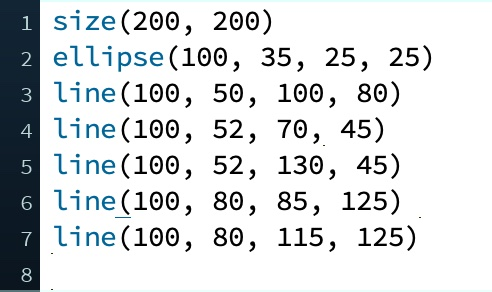

One of the main purposes of functions is to make programs easier to design and read. Take a look at the following program in Processing. Can you figure out what it does just by looking at it?

Of course, you could copy this program into Processing and run it to see what you get, but even then, you would only know what the program does as a whole. If there was some small thing about the program’s behaviour that you wanted to change, you wouldn’t know where to start.
Here’s the same program, but organized into functions. Now can you guess what it might do?
Sure, the overall program is longer now since we had to type all of those function headers, but the organization is much better. And if you wanted to tweak this program — say you decided that the legs were too long — you know exactly where to start looking without messing up anything else. Of course, even this is just a straightforward example. Functions are even more useful when they have parameters that let us alter their behaviour in different circumstances, like with the line() function that Processing provides for us.